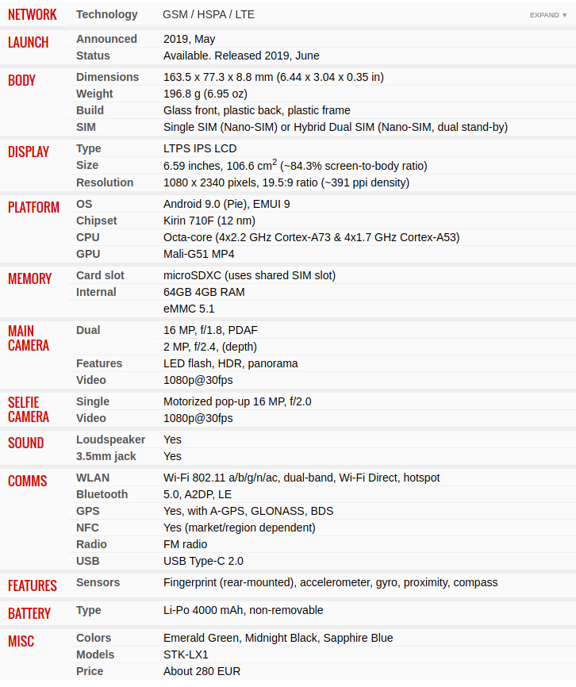

Indietro
Prestazioni

CPU
Una unità centrale di elaborazione indica nell'architettura indica un calcolatore, l'unità o sottosistema logico e fisico.
Memoria
Memoria: Serve per immagazzinare dati
Memoria RAM:
Random Access Memory
, Nella memoria RAM vengono copiati i programmi che la CPU deve eseguire.
Una volta chiuso il programma, le modifiche effettuate, se non opportunamente salvate sul disco rigido o su altra memoria non volatile, verranno perse.
Camera per i Selfie
La fotocamera da 16MP di questo telefono e' a comparsa. E' presente un motore che la apre e la chiude
Sicurezza
Questo telefono possiede un lettore di impronte digitali sul retro.
Batteria
La batteria da 4000mAh consente la durata per quasi tutta la giornata.
NFC
In questo telefono e' presente l'NFC
(Near Field Communication)
. E' una tecnologia di ricetrasmissione fino ad un massimo di
10cm
, e consente di pagare con carte contactless